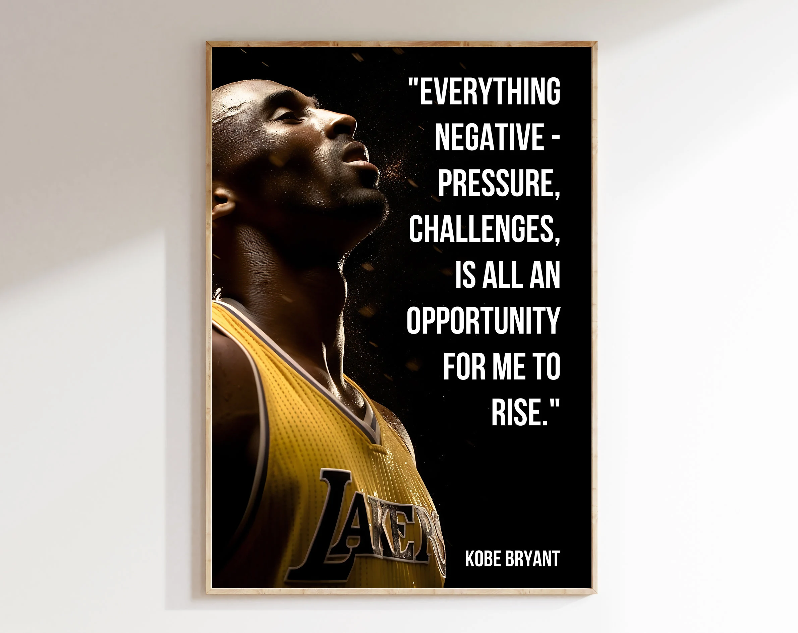
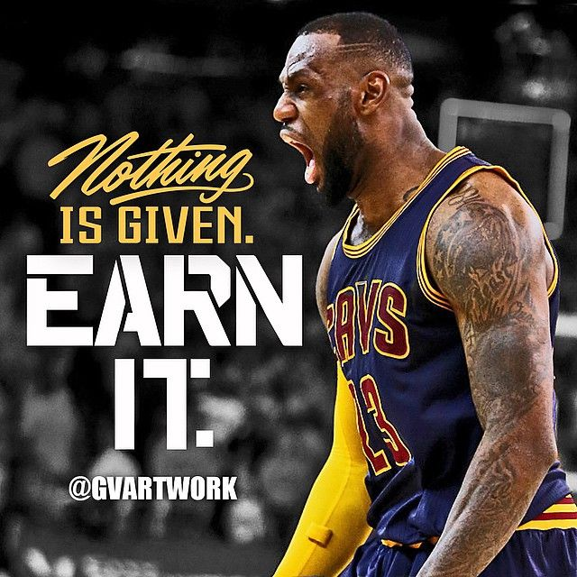
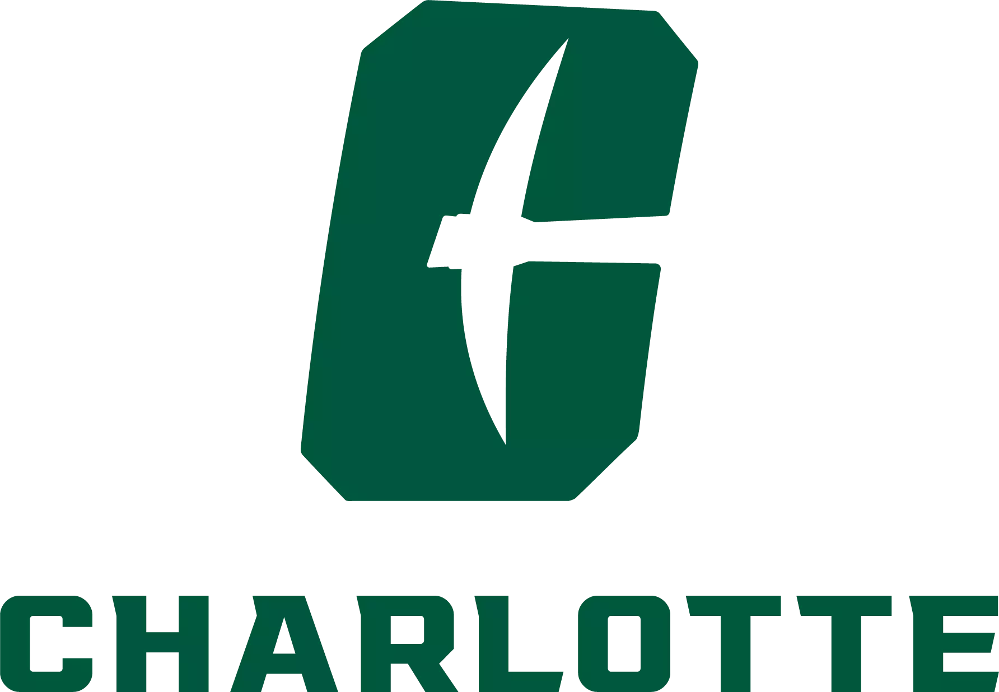
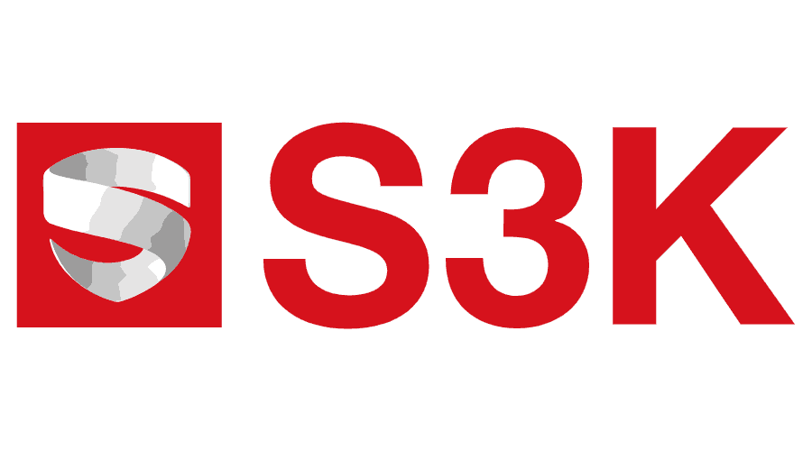
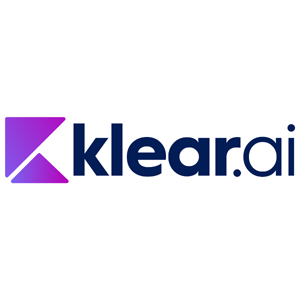
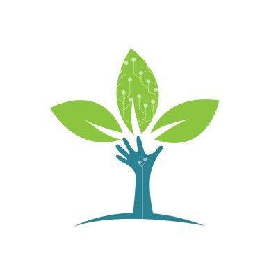
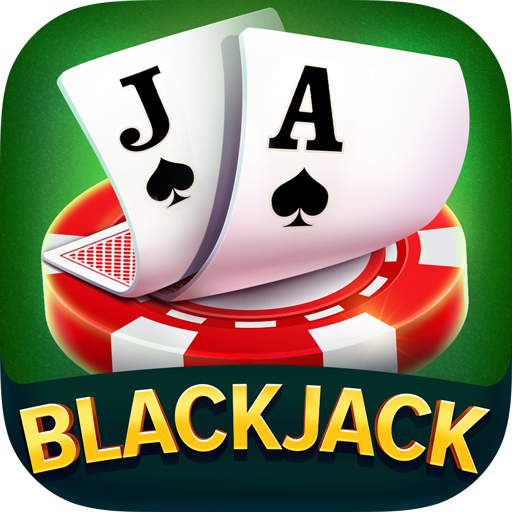

Iterating on WalletLens
Improving an AI-powered expense tracker through user feedback, feature testing, and edge-case analysis. My focus is making receipt processing more accurate and expense workflows more reliable while reducing manual input.
AI/ML Engineer • Full-stack builder • Basketball fan
I’m a Computer Science graduate from UNC Charlotte, pursuing an M.S. in Computer Science at NC State with expected graduation in May 2027. I build full-stack applications, backend APIs, data pipelines, and AI-powered systems using Python, JavaScript, SQL, and PostgreSQL. As the founder of WalletLens, I turn operational problems into practical software, from receipt-processing workflows to local AI tools, and refine products through user feedback and testing.
Interests & hobbies
Basketball has always been one of the ways I recharge, compete, and stay inspired. I love the mix of discipline, creativity, leadership, and clutch decision-making that the game brings out.


What I am focused on
Improving an AI-powered expense tracker through user feedback, feature testing, and edge-case analysis. My focus is making receipt processing more accurate and expense workflows more reliable while reducing manual input.
Basketball and lifting with friends, plus podcast episodes about product and startups. A lot of my project ideas start there before they become commits.
One project story
I founded and built WalletLens, an AI-powered expense tracking platform, owning the architecture, backend APIs, database design, testing, and product iteration from concept through a working application.
Built with Node.js, Express.js, PostgreSQL, and JavaScript.
Actively iterating on user feedback, failure cases, and edge-case testing to improve reliability and the overall experience.
Where I studied
M.S. in Computer Science
Ongoing • Expected Graduation: May 2027

B.S. in Computer Science • Concentration in Data Science
GPA: 3.78 • Graduated: May 2026
Honors: Dean's List, Chancellor's List
Coursework: Artificial Intelligence, Data Mining, Data Structures & Algorithms, Software Engineering, Database Design, Computer Systems, Web Application Development, Machine Learning.
What I have worked on

March 2026 – September 2026Tech: React, Python, JavaScript, HTML, CSS, AI-assisted learning systems.
 January 2026 – March 2026
January 2026 – March 2026
Tech: LLMs, NLP, data visualization, financial analytics.

May 2025 – August 2025What I have worked on
A local AI assistant built with FastAPI, React, and Ollama, integrating Qwen2.5 with persistent conversation history, project-based context sharing, local memory, and configurable user settings.
Highlights: Modular weather, date/time, and memory tools; SQLite conversation storage, API routing, and health diagnostics.
Tech:
An AI-powered expense tracker I founded and built, with backend APIs and database workflows for expense categorization, transactions, and receipt storage.
Highlights: OCR receipt processing with validation and guided corrections; approximately 25% better extraction accuracy across 500+ test cases.
Tech:
A sports machine learning project using Logistic Regression and Neural Network models to predict NBA MVP outcomes from historical statistics.
Highlights: Trained and evaluated models on 1,000+ player records, comparing predictions against historical MVP selections.
Models & data:

A convolutional neural network trained with TensorFlow to classify 10 tree species, achieving 92%+ accuracy using 10K+ labeled images.
Highlights: Data preprocessing, augmentation, and hyperparameter tuning to reduce overfitting and improve prediction consistency on unseen images.
Tech:
HoopConnect is an NBA fan experience for exploring players, teams, and game insights.
Highlights: Player browsing, clean UI, smooth navigation.
Tech:

A simple Python/Tkinter Blackjack game where players can hit, stand, double, or split against a dealer following classic rules.
Highlights: Dealer AI, card graphics, new game + shuffle.
Tech:
What I work with
Let’s build something
Open to internships, full-time roles, and meaningful collaborations.